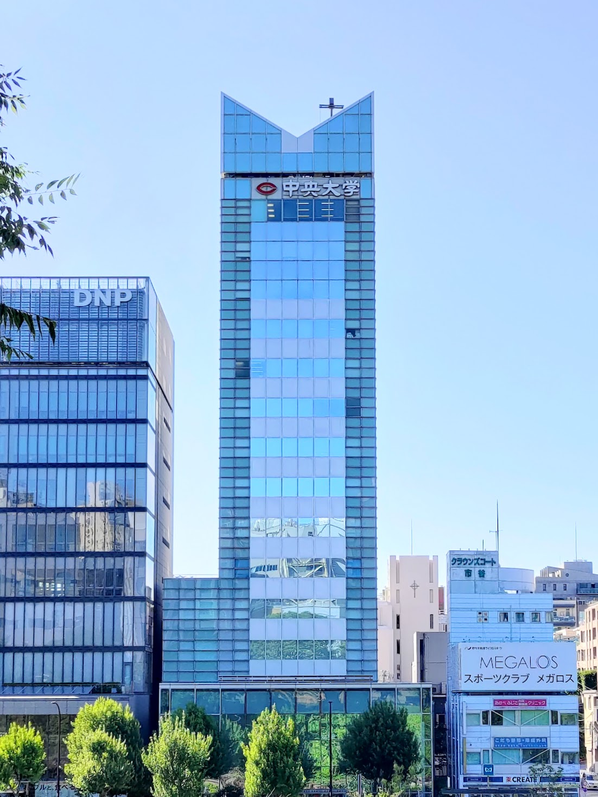

2024年度は11月2日,11月3日の2日間に渡り、中央大学市ヶ谷田町キャンパスで開催!!!
中央大学理工白門祭
| 開催場所 | 後楽園キャンパス |
| 開催日 | 11月2日(土),11月3日(日) |
| 大学祭HP | 中央大学理工白門祭実行委員会 |
ぜひ、お越しください！！！
学部説明

中央大学理工学部は、中央大学の「知」の創造部門です。
東京ドームを間近に臨む後楽園キャンパス、3駅5路線が利用できる交通の要所にあります。
ここには昔から研究者、学生、企業が集まり、
共に研究し、成果を社会に還元し続けてきました。
企業にとってのフットワークが良ければ就職活動のフットワークも良いわけですから、
産学連携が支える求人件数が安定しているのは当然です。
中央理工は、「研究」という実学的な教育方法を通じて、
学生、教員、そして大学そのものが成長する姿のありのままを社会に示し、
次世代の上昇志向に応えます。